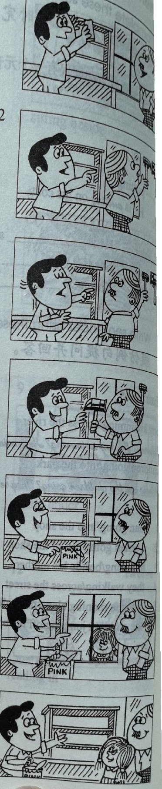

Lesson content · 课文
Lesson 37: Making a bookcase · 做书架
Listen then answer this question. 听录音，然后回答问题。
What is Susan’s favourite colour?
苏珊最喜欢哪种颜色？
DAN: You’re working hard, George. What are you doing?
GEORGE: I’m making a bookcase.
GEORGE: Give me that hammer please, Dan.
DAN: Which hammer? This one?
GEORGE: No, not that one. The big one.
DAN: Here you are.
GEORGE: Thanks, Dan.
DAN: What are you going to do now, George?
GEORGE: I’m going to paint it.
DAN: What colour are you going to paint it?
GEORGE: I’m going to paint it pink.
DAN: Pink!
GEORGE: This bookcase isn’t for me. It’s for my daughter, Susan. Pink’s her favourite colour.

New words and expressions · 生词和短语
| Word · 单词 | Pronunciation · 音标 | Meaning · 词义 |
|---|---|---|
| work | /wɜːk/ | v. 工作 |
| hard | /hɑːd/ | adv. 努力地 |
| make | /meɪk/ | v. 做 |
| bookcase | /ˈbʊkkeɪs/ | n. 书橱，书架 |
| hammer | /ˈhæmə/ | n. 锤子 |
| paint | /peɪnt/ | v. 上漆，涂 |
| pink | /pɪŋk/ | n. & adj. 粉红色；粉红色的 |
| favourite | /ˈfeɪvərɪt/ | adj. 最喜欢的 |
Notes on the text · 课文注释
- You’re working hard, George. 在这句话中 hard 是一个副词，修饰动词 work，有“努力地”、“费劲地”的意思。hard 还常常与表示动作、举止的动词连用，如 work，listen，play，try 等，用来加强动作的强度，可译成“拼命地”。
- What are you going to do now, George? 你现在准备做什么，乔治？be going to，是“打算”、“准备”、“按计划”在最近做某事，表示将来。
- paint it pink，it 指 bookcase，是宾语，pink 是宾语补足语。
Chinese translation · 参考译文
丹：你干得真辛苦，乔治。你在干什么呢？
乔治：我正在做书架。
乔治：请把那把锤子拿给我，丹。
丹：哪一把？是这把吗？
乔治：不，不是那把。是那把大的。
丹：给你。
乔治：谢谢，丹。
丹：你现在打算干什么，乔治？
乔治：我打算把它漆一下。
丹：你打算把它漆成什么颜色？
乔治：我想漆成粉红色。
丹：粉红色！
乔治：这个书架不是为我做的，是为我的女儿苏珊做的。粉红色是她最喜欢的颜色。
Practice · 课文练习
Understand the lesson · 课文理解
Comprehension · 理解题
Answer the question about the lesson text. 根据课文回答问题。
-
comprehension: Comprehension · 理解题 — What is Susan’s favourite colour?
Practice worksheet · 配套练习
A. Dialogue
Read this dialogue. Fill in the missing words. 填空。
-
worksheet: A. Dialogue — Dan: What ____ you doing, George? You’re ____ hard.
George: Yes, I am ____ hard. I’m ____ a bookcase. Give me that ____, please, Dan.
Dan: ____ one? This ____?
George: Yes, the big ____. Thanks.
Dan: What are you ____ ____ do now, George?
George: I’m ____ ____ paint it ____.
Dan: What colour are you ____ ____ paint it? Pink?
George: Yes, it’s for my ____, Susan. ____’s her favourite ____.
B. Structure
Write the -ing forms and sort them by spelling rule: work, make, paint, give, do, shut, swim, shine, walk, fly, eat, type, clean, cook, drink, run, climb, read, sharpen, take, turn, dust, put, sit. 写出以下动词的 -ing 形式，并根据拼写规则填入正确的栏目。
-
worksheet: B. Structure — Add -ing
-
worksheet: B. Structure — Double the final letter and add -ing
-
worksheet: B. Structure — Drop the final -e and add -ing
Grammar practice · 语法练习
I. Make sentences according to the examples
Example for Set 1: Look at Jack. -> I'm looking at Jack.
- 1a. Look at Jack.
- 1b. Help the girl.
- 1c. Sit on the chair.
- 1d. Read your book.
- 1e. Drink your milk.
- 1f. Wash the dishes.
- 1g. Make your bed.
- 1h. Open the window.
- 1i. Sweep the floor.
- 1j. Do your homework.
Example for Set 2: Put on your coats. -> We're putting on our coats.
- 2a. Put on your coats.
- 2b. Take off your shoes.
- 2c. Put your clothes in the wardrobe.
- 2d. Take out your books.
- 2e. Turn on the lights.
- 2f. Turn off the taps.
- 2g. Come into the kitchen.
- 2h. Clean your teeth.
- 2i. Go into the shop.
- 2j. Look at the boats.
II. Answer the questions using the cues
- What are you going to do? (make a bookcase/paint it)
I'm going to make a bookcase. Then I'm going to paint it.
- What are you and Anna going to do? (cook a meal/eat it)
We're going to cook a meal. Then we're going to eat it.
- What are you going to do? (do my homework/read a magazine)
- What are you and John going to do? (type some letters/empty the baskets)
- What are you going to do? (sweep the floor/clean my father's car)
- What are you and Louise going to do? (read our books/write some letters)
- What are you going to do? (turn off the television/turn off the lights)
- What are you going to do? (put my clothes in the wardrobe/shut the door)
Your notes and answers
Use this space for longer responses or exercises that do not have an individual answer box.